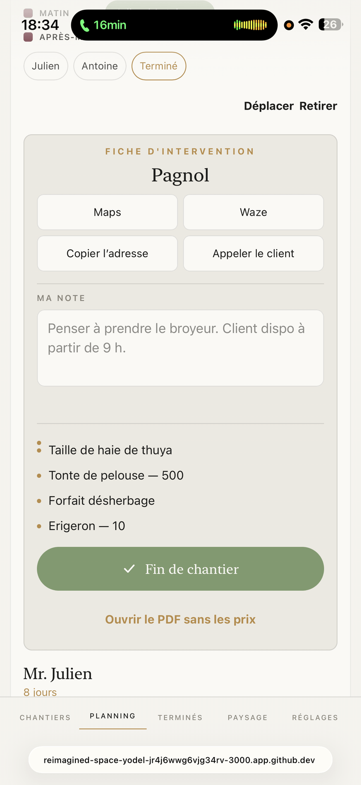

Aujourd’hui, votre application

La proposition
Vendredi 18 septembre
Pagnol
Mantes-la-Jolie
une journée
Mr. Julien
Vernouillet
8 jours
Votre page d’abord, la proposition juste en dessous. Rien ne bouge, rien ne change de nom. La carte, les quatre cases, la note, les puces, le bouton vert, le PDF en gras : tout est là, à sa place.
| Les quatre cases | moins hautes, serrées entre elles, une ligne fine au lieu d’un contour : et un petit dessin devant chaque mot |
| Ma note | le même blanc que les cases, le curseur en or |
| Fin de chantier | toujours le bouton vert, mais moins haut et arrêté au mot, comme « C’est fini » |
| Les filets | tous les mêmes, à la même distance |
Touchez « Fin de chantier » : les lignes deviennent les cases, comme aujourd’hui ; ce qui manque se dit avant « C’est fini ».
La première version de cette planche (sans un cadre, sans un bouton) est écartée : vous vouliez votre fiche, pas une autre.
Rien n’est codé.